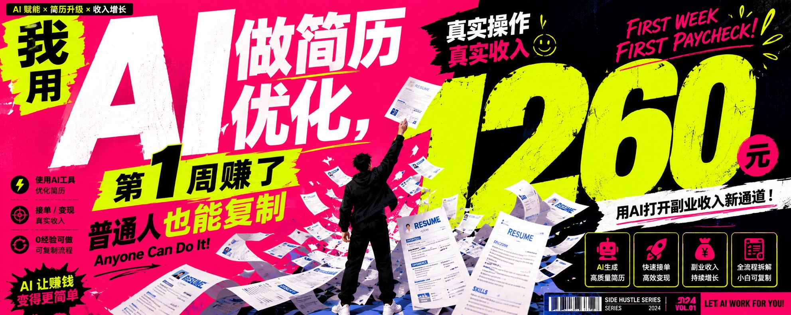

>
为什么是简历优化？
因为很多人不会量化自己的经历，突出自己的优势。
原文：
负责社群运营，维护用户关系。
优化后：
负责 3 个用户社群共计1500人的日常运营，通过话题策划、活动通知、用户答疑提升社群活跃度，并辅助完成用户留存和转化。
如果客户能提供数据，还可以进一步：
30 天内策划 12 场社群活动，社群活跃率提升 18%，课程咨询转化率提升 7%。
这就是 AI 的价值：把"我做了什么"，变成"我带来了什么结果"。
我是怎么做的？
服务分成 3 档：
- 99 元： 简历基础优化（语言润色、经历重写、排版建议）
- 199 元： 岗位匹配优化（客户给目标岗位，帮他把简历改得更贴近岗位 JD）
- 399 元： 求职组合包（简历优化 + 求职信 + 面试自我介绍 + 常见问题回答）
具体流程
1. 收集客户信息
✅ 简历原始版本 ✅ 投递的岗位 ✅ 过往经历详细补充（学习、工作、项目经历）
接着把上面的内容一次性喂给 AI：
你是一名资深求职顾问，请根据下面的目标岗位 JD，帮我优化这份简历。 要求： 1. 不要编造经历。 2. 把普通表达改成更专业的职场表达。 3. 突出和岗位相关的能力。 4. 每段经历尽量体现动作、成果、能力。 5. 输出修改建议和最终版本。 目标岗位：【粘贴岗位 JD】 原始简历：【粘贴客户简历】
2. 让 AI 找问题
请指出这份简历目前最大的问题，并按严重程度排序。 重点看： 1. 是否匹配目标岗位 2. 工作经历是否有结果感 3. 是否有废话 4. 是否缺少关键词 5. HR 第一眼是否愿意继续看
3. 改写经历
比如客户原文是：负责小红书账号运营，发布内容，提升曝光。
让 AI 改成：
负责小红书账号内容运营，包括选题策划、文案撰写、数据复盘与账号维护；围绕目标用户需求输出图文内容，持续优化标题、封面和发布时间，提高内容曝光与互动表现。
如果有数据，就继续强化：
30 天内发布内容 42 篇，账号涨粉 1800+，单篇最高阅读量 3.2 万，带来私域咨询 60+。
没有数据不要编。可以追问客户：
请根据这段经历，列出我应该追问客户的 10 个问题，帮助挖掘可量化成果。
4. 交付成品
✅ 修改后的简历 ✅ 修改说明 ✅ 一份匹配岗位 JD 的自我介绍
这样客户不会觉得你只是随便润色。
如何获客？
没有投放广告，在某书发了几条帖子：
- 被 HR 刷掉的简历，通常都有这 5 个问题
- 我用 AI 帮朋友改简历，1天拿到面试资格
- 普通人转行XX，简历要注意什么
每条都放一个例子在正文里，让客户有"原来可以这样"的想法。
笔记结尾写：
如果有人私信：
可以，我先帮你简单看一下。你现在给我三样东西： 1. 现在的简历 2. 想投的岗位 3. 你最担心的问题 我会先告诉你主要问题。如果只是小问题，我直接给你建议。如果需要系统优化，再看你要不要做付费版。
这样不会有压力，容易建立信任感。
看完后如果问题比较多：
你现在其实不需要担心经历不够的问题。主要问题还是表达太平。如果你愿意，我可以帮你做一版岗位匹配优化，包括经历重写、关键词调整、表达升级和面试自我介绍。费用是 199 元，今天可以交付。
为什么这个项目适合普通人？
因为你不需要成为专家。你只需要比客户多做三件事：
- 会用 AI 拆岗位 JD
- 会把经历翻译成岗位语言
- 会做前后对比，让客户看见价值
AI 负责生成，你负责判断。赚钱的关键不是"我会用AI"，而是"我能帮客户解决具体问题"。
你现在就可以复制的步骤
| 天数 | 做什么 |
|---|---|
| Day 1 | 选一个细分人群（应届生、转行运营、宝妈重返职场等） |
| Day 2 | 做 5 个简历前后对比案例 |
| Day 3 | 发 3 条修改简历的内容（问题 + 对比 + 解决方法） |
| Day 4 | 开放免费诊断，先帮 5 个人看简历 |
| Day 5 | 开始收 99 元基础优化单 |
| Day 6 | 整理客户反馈 |
| Day 7 | 把服务升级成套餐 |
同样的方法还可以换成：
- AI 小红书文案优化
- AI 短视频脚本代写
- AI 面试陪练
- AI 老照片修复
- AI PPT 美化
- AI 资料整理
- AI 店铺文案优化
这个工作流适合谁
- ✅ 想用 AI 赚点外快的普通人
- ✅ 不需要编程、不需要粉丝基础
- ✅ 想验证"AI + 服务"模式的人
- ✅ 在职场有经验、能提供专业判断的人
核心心法： AI 赚钱不是躺赚。真正能赚到钱的人，不是每天收藏 100 个工具的人，而是能把 AI 变成一个具体服务的人。
>
>
なぜ履歴書の最適化なのか
多くの人が経験を数値化したり、強みを際立たせたりするのが苦手だからです。
原文：
コミュニティ運営を担当し、ユーザー関係を維持。
最適化後：
3つのユーザーコミュニティ合計1500人の日常運営を担当。話題企画、イベント通知、ユーザーQ&Aを通じてコミュニティの活性度を向上させ、ユーザーの維持とコンバージョンを補助。
データがあればさらに：
30日間で12回のコミュニティイベントを企画、コミュニティ活性率が18%向上、コース問い合わせのコンバージョン率が7%向上。
これがAIの価値です。「何をしたか」ではなく「どんな結果をもたらしたか」に変えること。
サービス料金
- 99元： 基本最適化（語句の推敲・書き直し・レイアウト調整）
- 199元： 職種マッチング最適化（クライアントの目標職種に合わせて履歴書を調整）
- 399元： 就職活動コンボパック（履歴書最適化＋カバーレター＋面接自己紹介＋よくある質問への回答）
具体的な流れ
1. 情報収集
✅ 履歴書の原本 ✅ 応募する職種 ✅ これまでの経験の詳細（学業・仕事・プロジェクト）
上記の内容を一度にAIに与えます：
あなたはベテランの就職アドバイザーです。以下の目標職種のJDに基づいて、この履歴書を最適化してください。 要件： 1. 経験を捏造しないこと 2. 一般的な表現をより専門的なビジネス表現に変えること 3. 職種に関連する能力を強調すること 4. 各経験には行動、成果、能力を盛り込むこと 5. 修正提案と最終版を出力すること 目標職種：【JDを貼り付け】 元の履歴書：【クライアントの履歴書を貼り付け】
2. AIで問題点を洗い出す
この履歴書の最大の問題点を指摘し、深刻度順に並べてください。 重点的に見るポイント： 1. 目標職種にマッチしているか 2. 職務経歴に結果が示されているか 3. 無駄な記述はないか 4. 重要なキーワードが不足していないか 5. HRが一目で読み続けたくなるか
3. 経験内容を書き直す
例：クライアントの原文が「小红书アカウントを運営し、コンテンツを投稿し、露出を向上させる」の場合：
小红书アカウントのコンテンツ運営を担当。テーマ企画、コピーライティング、データ分析、アカウント管理を含む。ターゲットユーザーのニーズに基づいて画像+テキストコンテンツを作成し、タイトル、カバー、投稿時間を継続的に最適化し、コンテンツの露出とインタラクションを向上。
データがあればさらに強化：
30日間で42件のコンテンツを公開、フォロワー1800+増加、単一投稿の最大閲覧数3.2万、プライベートドメインへの問い合わせ60+。
データがない場合は作成せず、クライアントに質問を重ねる：
この経験に基づいて、クライアントに質問すべき10の質問をリストアップし、数値化可能な成果を引き出してください。
4. 成果物を納品
✅ 修正後の履歴書 ✅ 修正内容の説明 ✅ 目標職種にマッチした自己紹介
これでクライアントは「単なる修正」ではないと実感します。
集客方法
広告は一切出さず、某書（RED）に数件の投稿：
- HRに落とされた履歴書によくある5つの問題
- AIで友達の履歴書を修正したら1日で面接獲得
- XXに転職する際の履歴書の注意点
各投稿に具体例を入れ、クライアントに「こんな方法があったのか」と思わせます。
投稿の最後に：
自分の履歴書に問題があるか分からない方は、職種と経歴を送ってください。無料で診断します。
ダイレクトメッセージが来たら：
かしこまりました。まず簡単に見てみます。以下の3つを送ってください： 1. 現在の履歴書 2. 応募したい職種 3. 最も気になっている問題 まず主要な問題をお伝えします。小さな問題ならその場でアドバイスします。体系的な最適化が必要な場合は、有料版が必要かどうかをご判断ください。
問題が多い場合：
経歴が足りないことを心配する必要はありません。主な問題は表現が平坦なことです。よろしければ、職種マッチング最適化をお手伝いできます。経歴の書き直し、キーワード調整、表現の向上、面接自己紹介を含みます。料金は199元、本日中に納品可能です。
このプロジェクトが一般の人に適している理由
専門家になる必要はありません。クライアントより3つ多くできれば十分です：
- AIで職種JDを分析できる
- 経験を職種の言葉に翻訳できる
- Before/Afterの比較で価値を可視化できる
AIが生成し、あなたが判断する。お金を稼ぐ鍵は「AIが使えること」ではなく、「クライアントの具体的な問題を解決できること」です。
今すぐ実践できる7日間ステップ
| 日数 | やること |
|---|---|
| Day 1 | ターゲット層を選定（新卒、キャリアチェンジ、復職ママなど） |
| Day 2 | 5つのBefore/Afterケースを作成 |
| Day 3 | 3つの履歴書改善コンテンツを投稿（問題＋比較＋解決方法） |
| Day 4 | 無料診断を開放、まず5人の履歴書をチェック |
| Day 5 | 99元の基本最適化を受け付け開始 |
| Day 6 | クライアントのフィードバックを整理 |
| Day 7 | サービスをパッケージ化してアップグレード |
同じ方法は他にも応用可能：
- AI 小红书（RED）コピーライティング最適化
- AI ショート動画スクリプト代行
- AI 面接練習パートナー
- AI 古い写真の修復
- AI PPTデザイン美化
- AI 資料整理
- AI ショップ文章最適化
このワークフローに向いている人
- ✅ AIで副収入を得たい一般の人
- ✅ プログラミング不要、ファン基盤不要
- ✅ 「AI＋サービス」モデルを検証したい人
- ✅ 職場での経験があり、専門的判断を提供できる人
核心の心構え： AIで稼ぐことは楽して稼ぐことではありません。本当にお金を稼げる人は、100個のツールを毎日保存する人ではなく、AIを具体的なサービスに変えられる人です。
>